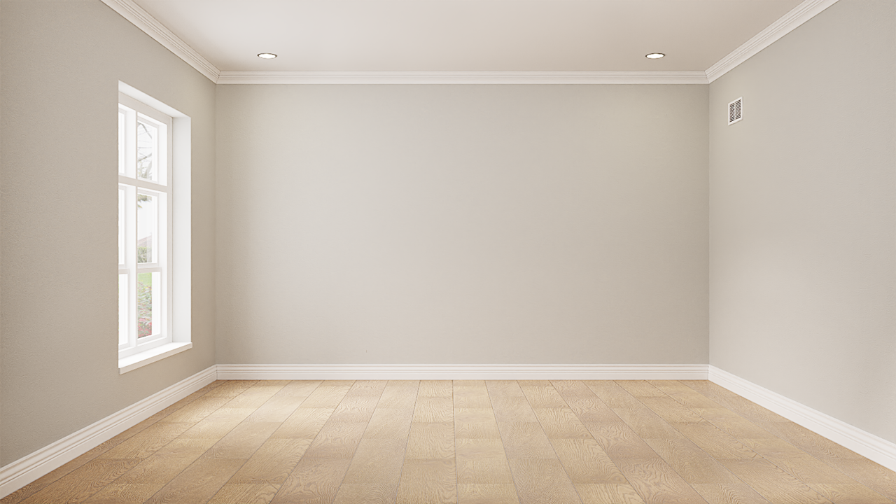

Suositut väripaletit
#DD4132
#9E1030
#FE840E
#FF6F61
#C62168
#8D9440
#FFD662
#00539C
#755139
#D69C2F
#616247
#E8B5CE
#D2C29D
#343148
#F0EAD6
#615550
Usein Kysytyt Kysymykset
Mitä tämä värien testaussivusto tekee?
Tämä sivusto auttaa sinua kokeilemaan ja vertailemaan eri värivaihtoehtoja ennen niiden valintaa. Voit helposti valita ja testata eri värisävyjä nähdäksesi, miten ne näyttävät erilaisissa konteksteissa ja valoissa.
Miten valitsen ja testaan värejä?
Voit aloittaa valitsemalla värin väripaletista. Kun olet valinnut värin, voit nähdä sen vaikutukset taustaan.
Mitkä selaimet tukevat tätä sivustoa?
Tämä sivusto toimii useimmilla selaimilla, kuten Chrome, Firefox, Safari, Opera ja Edge. Suosittelemme käyttämään uusinta selainversiota parhaan käyttökokemuksen varmistamiseksi.
Onko värien käyttöön rajoituksia?
Voit käyttää kaikkia värejä vapaasti ilman rajoituksia. Huomioithan kuitenkin, että sivusto saattaa käyttää joitain suosituksia värien kontrastin ja saavutettavuuden parantamiseksi.